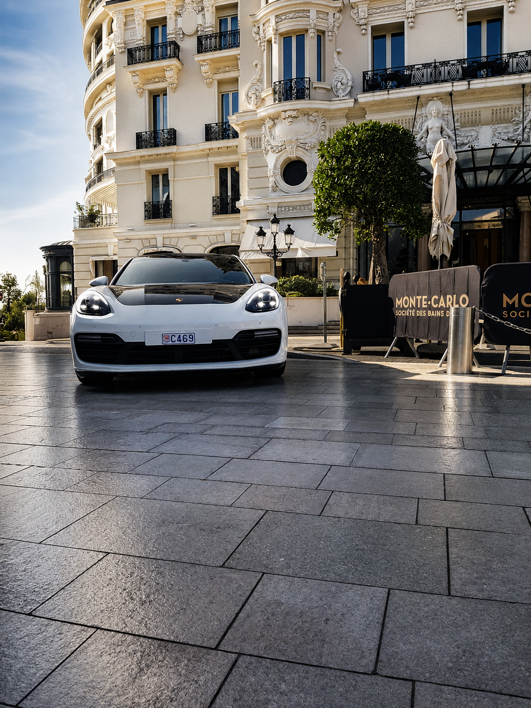
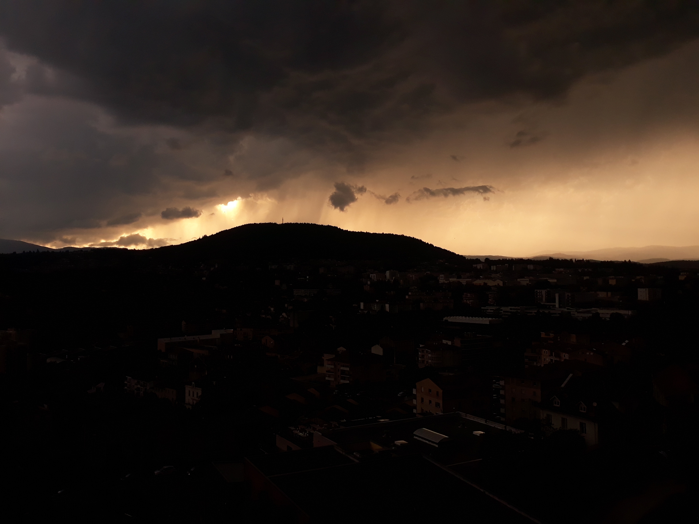
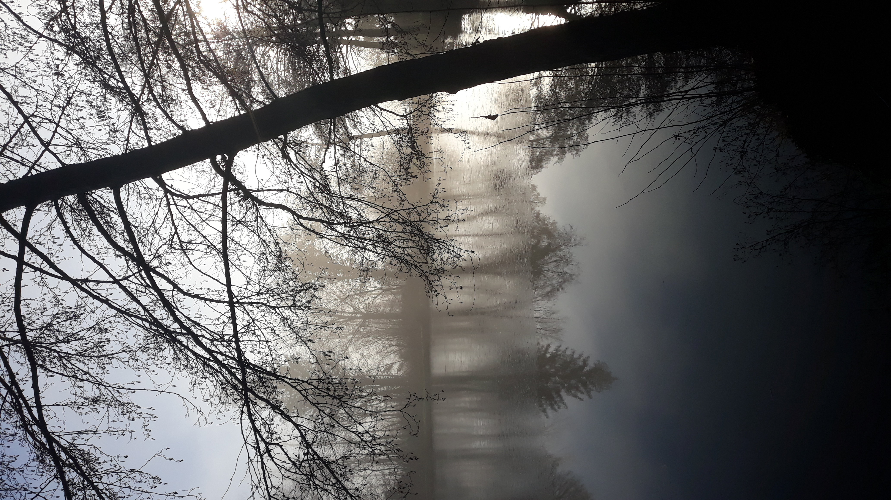
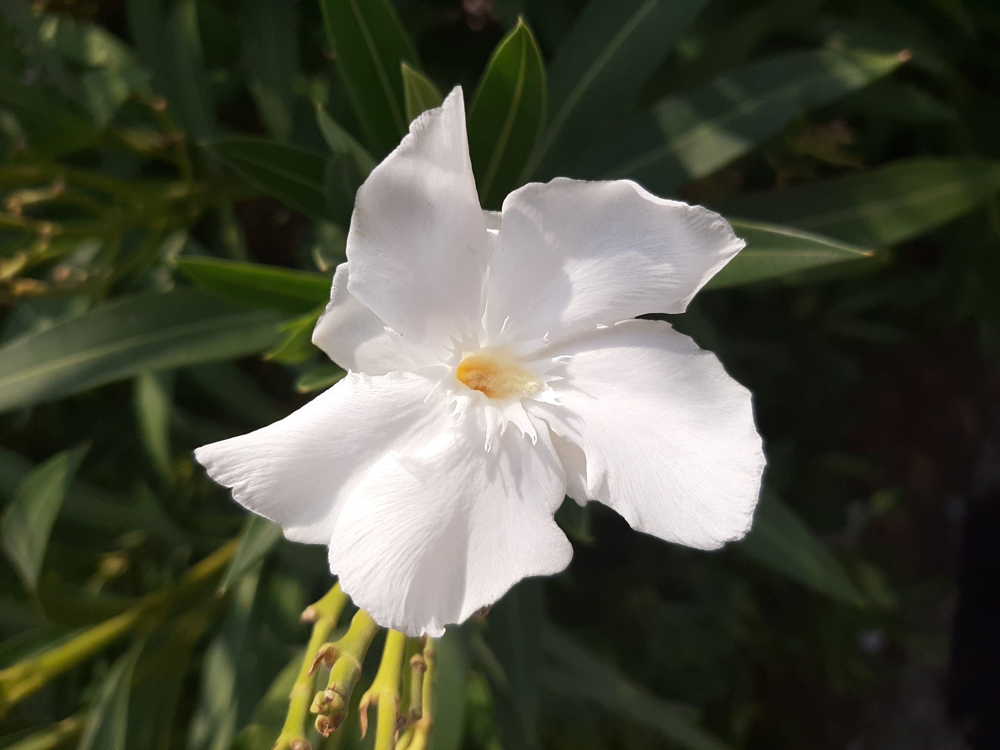
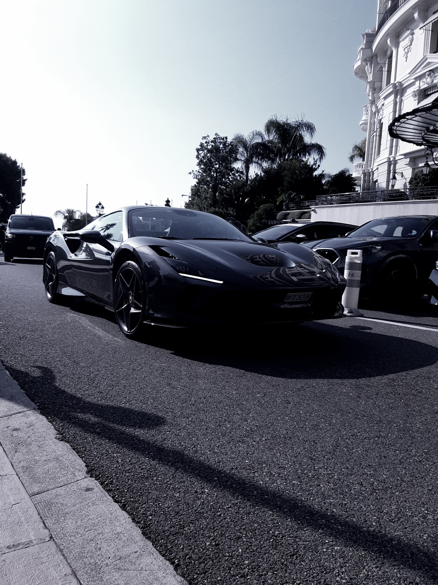
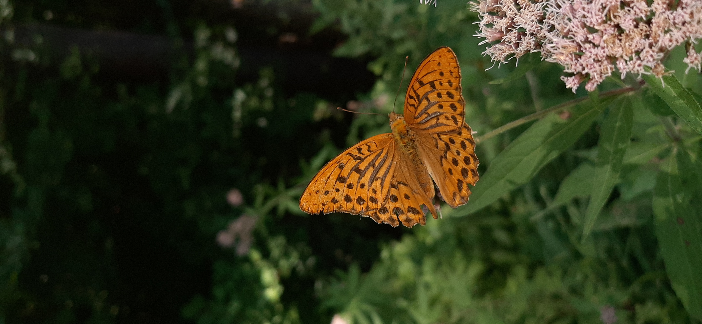

Mes photos

Photographie d'une porsche
Photographie d'une éclipse

Photographie de Annonay par temps d'orage

Photographie d'un papillon zygène posé sur une fleur de carline blanche

Photographie d'un lac brumeux

Photographie de laurieur rose dans le Devoluy

Photographie d'une ferrari à Monaco

Photographie d'un papillon tabac d'espagne dans le Devoluy